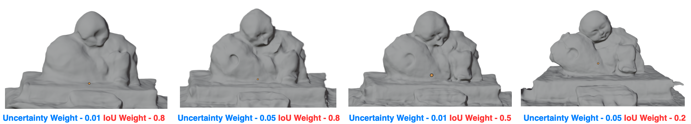

Qualitative Results

Qualitative comparison across Clock, Deaf, and Farmer scenes. PCM-NeRF recovers finer geometric detail compared to all baselines, particularly in regions where outlier pose initialization corrupts reconstruction.
Hyperparameter Sensitivity

Effect of IoU weight (λIoU) and uncertainty weight (λunc) on Chamfer Distance and F-Score. Best results are achieved at λIoU = 0.2 and λunc = 0.05.
Ablation Study: Component Contributions
Results averaged across all 8 scenes. Both the probabilistic uncertainty module and the feature correspondence structure contribute positively; the best performance is achieved only when both are active together.
| Prob. Uncertainty | Feature Corr. | CD ↓ | F-Score ↑ |
|---|---|---|---|
| ✗ | ✗ | 1.18 | 0.72 |
| ✓ | ✗ | 1.33 | 0.68 |
| ✗ | ✓ | 0.46 | 0.85 |
| ✓ | ✓ | 0.32 | 0.93 |
Quantitative Comparison
Chamfer Distance (↓) across all 8 scenes. PCM-NeRF achieves the best result on 6 of 8 scenes, reducing mean CD by 28.8% relative to SG-NeRF and improving mean F-Score from 0.85 to 0.93.
| Method | Baby | Bear | Bell | Clock | Deaf | Farmer | Pavilion | Sculpture | Mean CD ↓ | Mean F ↑ |
|---|---|---|---|---|---|---|---|---|---|---|
| NeuS | 0.69 | 0.31 | 3.33 | 1.16 | 0.55 | 2.49 | 0.29 | 0.66 | 1.19 | 0.73 |
| Neuralangelo | 0.70 | 0.65 | — | 0.38 | 0.59 | 4.89 | 1.95 | 0.31 | — | — |
| BARF | 1.08 | 0.28 | 3.31 | 0.19 | 0.46 | 2.13 | 0.38 | 0.57 | 1.05 | 0.73 |
| SCNeRF | 1.19 | 0.27 | 3.74 | 1.33 | 0.46 | 1.45 | 0.23 | 0.81 | 1.19 | 0.66 |
| GARF | 2.04 | 2.25 | 3.09 | 0.50 | 0.59 | 1.58 | 0.96 | 0.57 | 1.45 | 0.70 |
| L2G-NeRF | 1.15 | 0.29 | 1.26 | 0.24 | 0.40 | 2.18 | 0.46 | 0.37 | 0.79 | 0.76 |
| Joint-TensoRF | 3.11 | 1.22 | 2.49 | 0.36 | 0.36 | 2.51 | 1.35 | 0.70 | 1.51 | 0.59 |
| SG-NeRF | 0.56 | 0.25 | 0.98 | 0.15 | 0.45 | 0.87 | 0.20 | 0.22 | 0.46 | 0.85 |
| Ours (PCM-NeRF) | 0.25 | 0.24 | 0.51 | 0.16 | 0.23 | 0.79 | 0.24 | 0.20 | 0.33 | 0.93 |
Chamfer Distance ↓ per scene. Bold = best per column. PCM-NeRF achieves the lowest CD on 6 of 8 scenes.